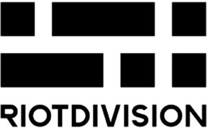

Trade Mark Journal No.2025/042 17 October 2025
WO0000001878836 (18,25)
Office of origin: Ukraine
Date of International Registration:4 September 2025
Date of designation in the UK:
4 September 2025

International priority date claimed: 4 April 2025
(Ukraine)
- Class 18
- Mountaineering sticks; whips; luggage tags; adhesive tags of leather for bags; sew-on tags of leather for clothing; goldbeaters' skin; valises; trunks [luggage]; curried skins; reins for guiding children; business card cases; compression cubes adapted for luggage; boxes of vulcanized fibre; key cases; bits for animals [harness]; bridles [harness]; purses; chain mesh purses; parts of rubber for stirrups; dog waste bag dispensers adapted for use with leashes; labels of leather; chamois leather, other than for cleaning purposes; fastenings for saddles; cat o' nine tails; frames for coin purses [structural parts of coin purses]; frames for umbrellas or parasols; frames for bags [structural parts of bags]; attaché cases; umbrella rings; valves of leather; casings, of leather, for springs; boxes of leather or leatherboard; hat boxes of leather; butts [parts of hides]; kid; leathercloth; saddle trees; slings for carrying infants; haversacks; moleskin [imitation of leather]; travelling sets [leatherware]; knee-pads for horses; reins; muzzles; collars for animals; halters; vanity cases, not fitted; harness fittings; clothing for pets; trimmings of leather for furniture; suitcase packing organizers; umbrellas; parasols; leather straps; straps for soldiers' equipment; harness straps; straps for skates; chin straps, of leather; straps of leather [saddlery]; shoulder belts [straps] of leather; horseshoes; pads for horse saddles; leather leashes; covers for horse saddles; covers for animals; horse blankets; girths of leather; briefcases; conference folders; traces [harness]; randsels [Japanese school satchels]; rucksacks; stirrup leathers; umbrella handles; grips for holding shopping bags; suitcase handles; walking stick handles; backpacks for carrying infants; riding saddles; net bags for shopping; cases of leather or leatherboard; umbrella or parasol ribs; stirrups; bags [envelopes, pouches] of leather, for packaging; reusable shopping bags; wheeled shopping bags; bags for climbers; tool bags, empty; sling bags for carrying infants; garment bags for travel; toilet bags, not fitted; travelling bags; handbags; beach bags; bags for sports; bags for campers; school bags; bags; pouch baby carriers; nose bags [feed bags]; bridoons; umbrella sticks; hiking sticks; walking sticks; walking stick seats; tefillin [phylacteries]; harness for animals; card cases [notecases]; credit card cases [wallets]; horse collars; fur; saddlecloths for horses; suitcases; motorized suitcases; suitcases with wheels; umbrella covers; vegan leather; leather, unworked or semi-worked; imitation leather; mycelium-based imitation leather; leatherboard; animal skins; cattle skins; leather cord; blinkers [harness]; game bags [hunting accessories].
- Class 25
- Albs; wimples; bandanas [neckerchiefs]; berets; underwear; sweat-absorbent underwear; boas [necklets]; teddies [underclothing]; ankle boots; straps for bras; breeches for wear; football shoes; brassieres; adhesive bras; camisoles; valenki [felted boots]; gymnastic shoes; wooden shoes; sports shoes; beach shoes; footwear; hosiery; knitwear [clothing]; stuff jackets [clothing]; shirt yokes; veils [clothing]; leggings [leg warmers]; gaiters; corselets; fittings of metal for footwear; bibs, sleeved, not of paper; espadrilles; vests; non-slipping devices for footwear; detachable collars; galoshes; hats; paper hats [clothing]; hoods [clothing]; hat frames [skeletons]; caps being headwear; pockets for clothing; kimonos; martial arts uniforms; cap peaks; visors being headwear; tights; slips [underclothing]; collars [clothing]; bodices [lingerie]; corsets [underclothing]; masquerade costumes; suits; neckties; spats; skull caps; bathing suits; jackets [clothing]; leggings [trousers]; liveries; cuffs; shirt fronts; mantillas; face coverings [clothing], not for medical or sanitary purposes; sleep masks; mitres [hats]; mittens; muffs [clothing]; footmuffs, not electrically heated; heelpieces for footwear; ear muffs [clothing]; headwear; bibs, not of paper; fur stoles; nipple pasties being underclothing; tips for footwear; outerclothing; embroidered clothing; ready-made clothing; motorists' clothing; cyclists' clothing; clothing for gymnastics; clothing of leather; clothing incorporating LEDs; gabardines [clothing]; jerseys [clothing]; latex clothing; clothing of imitations of leather; waterproof clothing; paper clothing; beach clothes; sportswear incorporating digital sensors; sports jerseys; medical uniforms, other than for operating rooms; clothing; clothing authenticated by non-fungible tokens [NFTs]; clothing containing slimming substances; maniples; overcoats; pants; stockings; sweat-absorbent stockings; parkas; pelerines; sashes for wear; footwear uppers; hairdressing capes; fingerless gloves; half-boots; heels; garters; ready-made linings [parts of clothing]; soles for footwear; dress shields; braces [suspenders] for clothing; pyjamas; bathing trunks; ascots; coats; headbands [clothing]; ponchos; belts [clothing]; girdles; money belts [clothing]; layettes [clothing]; heel protectors for shoes; heelpieces for stockings; welts for footwear; rash guards; fishing vests; chasubles; mountaineering gloves; cycling gloves; driving gloves; ski gloves; gloves [clothing]; sandals; bath sandals; jumper dresses; saris; sarongs; sweaters; smart clothing; short-sleeve shirts; shirts; skirts; petticoats; skorts; sports singlets; dresses; slippers; bath slippers; thermal gloves for touchscreen devices; togas; leotards; underpants; babies' pants [underwear]; panties; boxer shorts; shoes; turbans; inner soles; aprons [clothing]; uniforms; tee-shirts; dressing gowns; bath robes; overalls; boot uppers; hanbok; pocket squares; headscarves; scarves; furs [clothing]; top hats; boots for sports; ski boots; boots; shawls; shower caps; bathing caps; neck tube scarves; studs for football shoes; socks; sweat-absorbent socks; stocking suspenders; sock suspenders; trousers; gaiter straps; pelisses.
Moroz Oleh
Representative: Yurii Danylchuk, P.O. Box 348, Kyiv 01001, UKRAINE